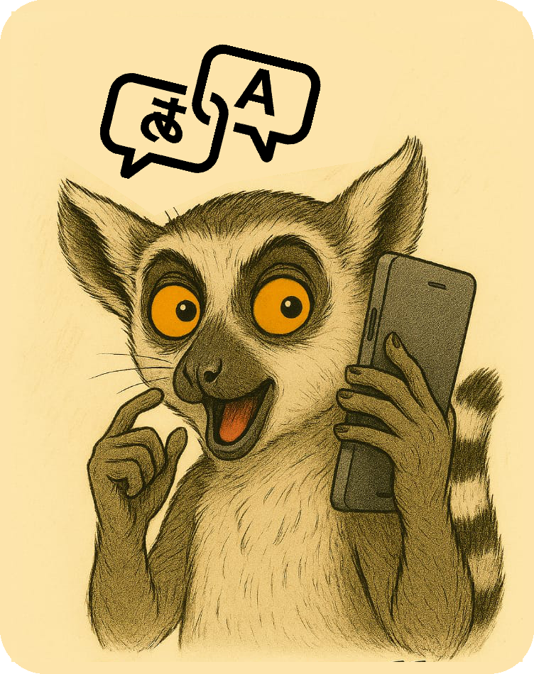

// js/preflight-module.js - MÓDULO INTELIGENTE
class WebRTCPreflight {
    constructor() {
        this.isPreheated = false;
        this.mediaStream = null;
    }

    // 1. Tela inicial com SUA imagem
    showInitialScreen() {
        const preflightHTML = `
            <div id="preflight-screen" style="
                position: fixed; top: 0; left: 0; width: 100%; height: 100%;
                background: #000; display: flex; justify-content: center;
                align-items: center; z-index: 9999; flex-direction: column;
            ">
                
                <p style="color: white; margin-top: 20px; font-size: 18px;">
                    Preparando tradução em tempo real...
                </p>
            </div>
        `;
        document.body.insertAdjacentHTML('afterbegin', preflightHTML);
    }

    // 2. Remove tela inicial
    hideInitialScreen() {
        const element = document.getElementById('preflight-screen');
        if (element) {
            element.style.opacity = '0';
            element.style.transition = 'opacity 0.5s ease';
            setTimeout(() => element.remove(), 500);
        }
    }

    // 3. Pré-aquecimento do narrador
    preheatSpeechSynthesis() {
        if (this.isPreheated) return;
        
        const language = navigator.language || 'pt-BR';
        const ghostText = 'Sistema de tradução pronto';

        const utterance = new SpeechSynthesisUtterance(ghostText);
        utterance.volume = 0;
        utterance.lang = language;

        const speak = () => {
            const voices = speechSynthesis.getVoices();
            const preferredVoice = voices.find(v => v.lang === language) || voices[0];
            if (preferredVoice) {
                utterance.voice = preferredVoice;
                speechSynthesis.speak(utterance);
                this.isPreheated = true;
                console.log('✅ Narrador pré-aquecido');
            }
        };

        if (speechSynthesis.getVoices().length > 0) {
            speak();
        } else {
            speechSynthesis.onvoiceschanged = speak;
        }
    }

    // 4. Solicitação de mídia
    async requestMediaWithDelay(delay = 5000) { // 5 segundos para teste
        return new Promise((resolve) => {
            setTimeout(async () => {
                try {
                    const stream = await navigator.mediaDevices.getUserMedia({
                        video: true,
                        audio: true
                    });
                    this.mediaStream = stream;
                    console.log('✅ Câmera e microfone autorizados');
                    resolve(stream);
                } catch (error) {
                    console.log('⚠️ Mídia não autorizada, continuando sem...');
                    resolve(null);
                }
            }, delay);
        });
    }

    // 5. Inicialização completa
    async initialize() {
        console.log('🚀 Iniciando pré-carregamento inteligente...');
        
        // Mostra tela inicial (AZUL)
        this.showInitialScreen();
        
        // Pré-aquecimento paralelo
        this.preheatSpeechSynthesis();
        
        // Aguarda tempo E permissões
        const mediaStream = await this.requestMediaWithDelay(5000);
        
        // Remove tela inicial (volta para VERDE)
        this.hideInitialScreen();
        
        return {
            mediaStream: mediaStream,
            isSpeechReady: this.isPreheated
        };
    }
}
